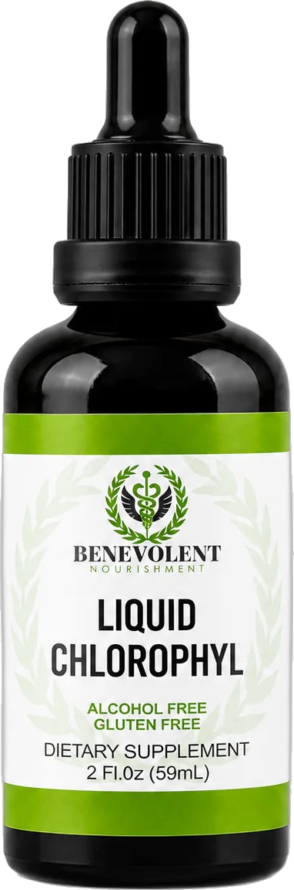
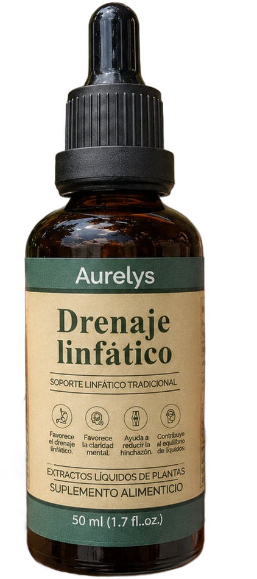

GUÍA DIGITAL
Guía Entalle
21 días de hábitos simples
Hidratación, mañanas, movimiento, alimentación y descanso: pequeños pasos que sí se mantienen.




Guía Entalle
21 días de hábitos simples
Una guía de Entalle, tienda online chilena · entalle.cl
Contacto: contacto@entalle.cl · WhatsApp +56 9 4058 9575
© 2026 Entalle. Todos los derechos reservados. Prohibida su reproducción, distribución o venta total o parcial sin autorización escrita de Entalle.
Contenido informativo sobre hábitos generales. No reemplaza la indicación de un profesional de la salud. Si tienes una condición médica, estás embarazada, amamantando o tomas medicamentos, consulta antes de hacer cambios en tu rutina.Bienvenida
Cómo usar esta guía
Esta guía no busca cambiar tu vida en un fin de semana. Busca algo más útil: que en 21 días tengas cinco hábitos simples funcionando casi en piloto automático.
Cada capítulo trae una idea central, pasos concretos y un mini desafío. Al final encontrarás un plan de 21 días y una hoja para marcar tu avance.
La regla de oro: empieza tan pequeño que sea imposible fallar. Un vaso de agua al despertar vale más que un plan perfecto que abandonas el martes.
Qué vas a trabajar
- Hidratación a lo largo del día
- Una mañana de 10 minutos
- Moverte más, aunque trabajes sentado
- Un plato más equilibrado
- Dormir con horario
Capítulo
Por qué 21 días
Un hábito es una acción que repites tantas veces que deja de requerir esfuerzo. No existe un número mágico de días, pero tres semanas son suficientes para notar que algo cambió y querer seguir.
Las 3 claves de un hábito que dura
- Anclarlo a algo que ya haces: "después de lavarme los dientes, tomo un vaso de agua".
- Hacerlo visible: la botella en el escritorio, las zapatillas junto a la puerta.
- Registrarlo: marcar el día en la hoja de seguimiento es una pequeña recompensa.
Si fallas un día, no pasa nada. La regla es simple: nunca dos días seguidos.
Capítulo
Hábito 1 · Hidratación
Muchas veces pasamos horas sin tomar agua simplemente porque no la tenemos a mano. La meta no es contar mililitros, sino que el agua esté presente durante todo tu día.
Pasos concretos
- Un vaso de agua apenas te levantas, antes del café.
- Una botella reutilizable siempre a la vista.
- Un vaso de agua con cada comida.
- Si te aburre el agua sola, saborízala con rodajas de limón, pepino o menta.
- Tu orina clara es una buena señal de que vas bien.
Mini desafío: llena tu botella tres veces hoy. Marca cada recarga.
Capítulo
Hábito 2 · Una mañana de 10 minutos
La forma en que empiezas el día influye en todo lo que viene después. No necesitas levantarte a las 5 a. m.: basta con 10 minutos intencionales.
Tu rutina base
- Agua: un vaso grande al despertar.
- Luz: abre las cortinas o sal a la ventana 2 minutos.
- Estira: cuello, hombros y espalda, 3 minutos.
- Desayuna algo simple con proteína (huevo, yogur, pan integral con palta).
- Planifica: anota las 3 tareas más importantes del día.
Deja lista la noche anterior tu botella llena y lo que vas a desayunar. Así la mañana se hace sola.
Capítulo
Hábito 3 · Moverte más
Si trabajas sentado o de pie muchas horas, el cuerpo agradece cualquier cambio de posición. No hace falta un gimnasio: hace falta interrumpir la quietud.
Ideas para tu día
- Una pausa de 2 a 3 minutos cada hora: ponte de pie, camina, estírate.
- Camina 20 a 30 minutos al día, aunque sea en dos partes.
- Usa las escaleras cuando puedas.
- Habla por teléfono caminando.
- Al llegar a casa, 10 minutos con las piernas en alto y una caminata suave después de cenar.
5 estiramientos de oficina
- Círculos de tobillo: 10 por lado.
- Elevación de talones de pie: 15 repeticiones.
- Estiramiento de gemelos apoyado en la pared: 20 segundos por pierna.
- Rotación de hombros hacia atrás: 10 veces.
- Inclinación lateral de cuello: 15 segundos por lado.
Capítulo
Hábito 4 · Un plato más equilibrado
Comer mejor no significa hacer dieta. Una forma sencilla de ordenar tus comidas es pensar en el plato.
El plato simple
- La mitad: verduras de cualquier color, crudas o cocidas.
- Un cuarto: proteína (pollo, pescado, huevo, legumbres, carne magra).
- Un cuarto: carbohidratos (arroz, papas, pasta, pan integral).
- Un toque de grasa buena: palta, aceite de oliva, frutos secos.
Pequeños cambios que suman
- Fíjate en los sellos "ALTO EN" de los envases y elige la opción con menos sellos.
- Ten fruta lavada a la vista para el antojo de la tarde.
- Cocina doble y guarda una porción para el día siguiente.
- Come sin pantalla al menos una comida al día.
Capítulo
Hábito 5 · Dormir con horario
Descansar bien es la base de todo lo demás. El truco más efectivo es también el más simple: acostarte y levantarte a la misma hora, incluso el fin de semana.
Tu rutina de noche
- Deja las pantallas 30 a 60 minutos antes de dormir.
- Evita el café y las bebidas con cafeína después de media tarde.
- Mantén tu pieza oscura, fresca y en silencio.
- Cena liviano y al menos dos horas antes de acostarte.
- Anota en un papel lo pendiente para mañana y suéltalo.
Mini desafío: pon una alarma que te avise la hora de empezar a desconectarte.
Plan
Tu plan de 21 días
Semana 1 · Base- Vaso de agua al despertar
- Botella siempre a la vista
- Mañana de 10 minutos
Semana 2 · Movimiento- Todo lo de la semana 1
- Pausa activa cada hora
- Caminata de 20 minutos
Semana 3 · Equilibrio- Todo lo anterior
- Un plato equilibrado al día
- Horario fijo para dormir
Al terminar, repite la semana que más te costó. Los hábitos se construyen con repetición, no con perfección.
Marca cada día
Hoja de seguimiento
Pinta o marca con una ✓ cada hábito que cumpliste. Si fallas un día, retoma al siguiente.
| 1 | 2 | 3 | 4 | 5 | 6 | 7 | 8 | 9 | 10 | 11 | 12 | 13 | 14 | 15 |
|---|
| Agua al despertar | | | | | | | | | | | | | | | |
| Botella a la vista | | | | | | | | | | | | | | | |
| Mañana de 10 min | | | | | | | | | | | | | | | |
| Pausas activas | | | | | | | | | | | | | | | |
| Caminata | | | | | | | | | | | | | | | |
| Plato equilibrado | | | | | | | | | | | | | | | |
| Horario de sueño | | | | | | | | | | | | | | | |
| 16 | 17 | 18 | 19 | 20 | 21 |
|---|
| Agua al despertar | | | | | | |
| Botella a la vista | | | | | | |
| Mañana de 10 min | | | | | | |
| Pausas activas | | | | | | |
| Caminata | | | | | | |
| Plato equilibrado | | | | | | |
| Horario de sueño | | | | | | |
Entalle
Complementa tu rutina
En Entalle elegimos productos que calzan con una rutina simple y constante. Úsalos siempre según las indicaciones de su envase.
Clorofila líquida BenevolentUnas gotas en tu botella de agua. Sabor menta, sin alcohol y sin gluten.
Aurelys Drenaje LinfáticoSuplemento herbal en gotas para sumar a tu mañana, en agua o té.
NeuraZenx Ácido Alfa Lipoico 600 mgCápsulas vegetales con Bioperine para tu consumo diario.
Gracias por elegir Entalle
Encuentra más productos y guías en entalle.cl
Contenido informativo sobre hábitos generales. No reemplaza la indicación de un profesional de la salud. Si tienes una condición médica, estás embarazada, amamantando o tomas medicamentos, consulta antes de hacer cambios en tu rutina.
© 2026 Entalle · Todos los derechos reservados.